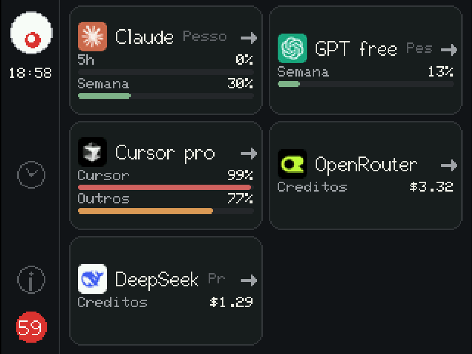
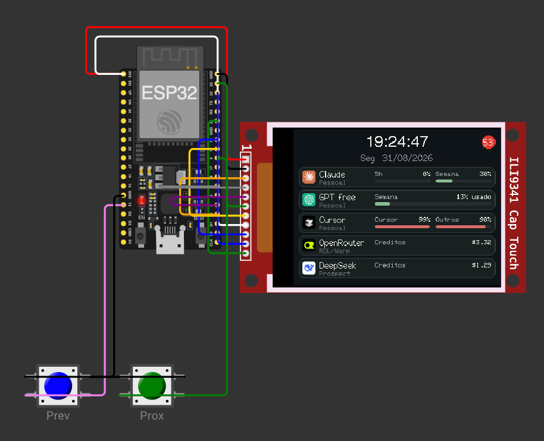
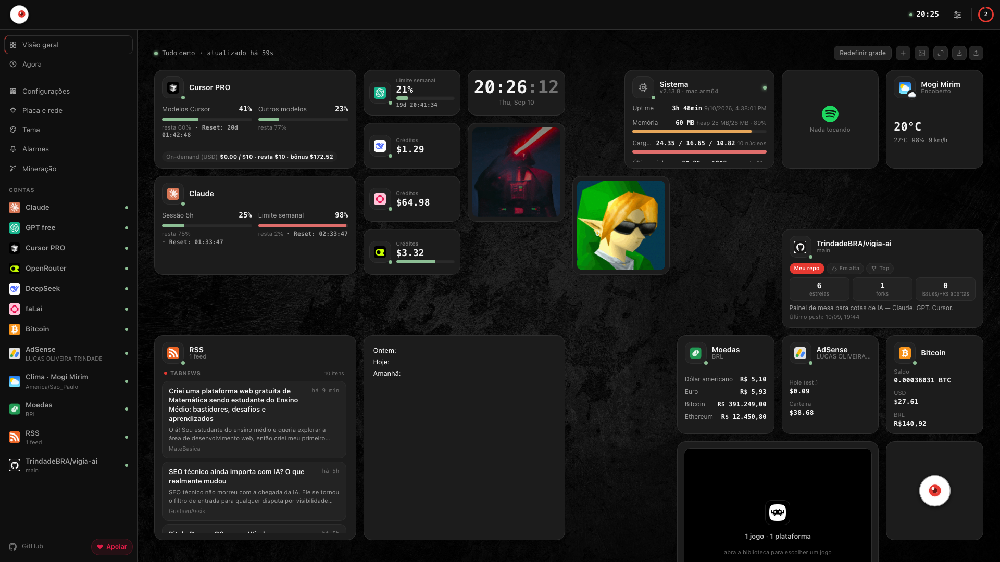
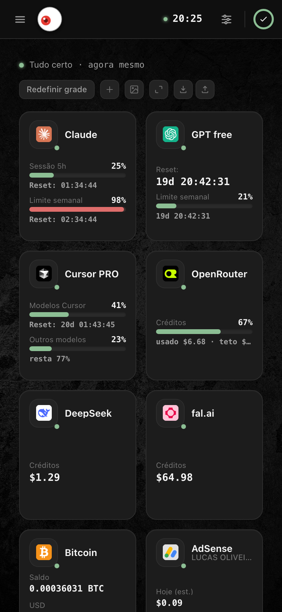
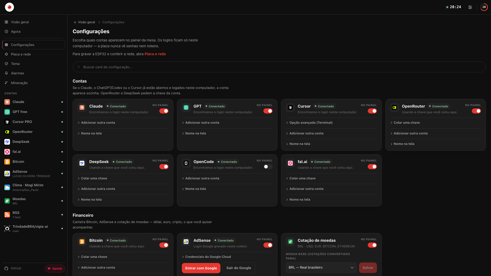
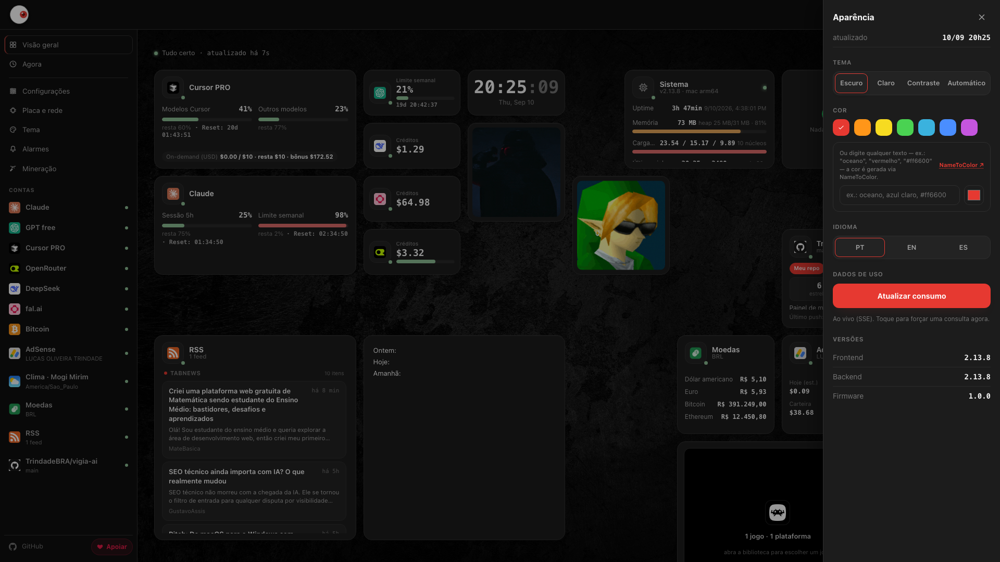

FEITO PARA QUEM VIVE DE IA — DEV, CRIADOR, POWER USER
O PROBLEMA QUE NINGUÉM AGUENTA MAIS
5 assinaturas, 5 abas, 0 visibilidade. Até travar no meio da entrega.
Você usa Claude, ChatGPT/Codex, Cursor, OpenRouter e DeepSeek no mesmo dia — cada um com sua cota, sua janela de reset e sua aba pra checar. Na prática, só descobre que estourou o limite quando o autocomplete morre no meio da task.
curl, sem susto.
ONDE RODA
Um gadget de mesa — mas o firmware é opcional.
Do tamanho de um despertador na mesa, ou como página web num monitor extra e até no celular. Você escolhe.
Físico — sempre à vista
ESP32 Dev Module + TFT SPI 3,5" touch (XPT2046). Tela sempre ligada na mesa. QR code na tela abre o painel de qualquer aparelho na mesma Wi-Fi.
Web — sem hardware
/display replica a placa no navegador. Responsivo, com sidebar no desktop e menu no mobile. Tema e cor salvos no localStorage.
Simulado — sem soldar
Wokwi no VS Code. Mesmo sketch, Wi-Fi simulada + coletor real via wokwigw. Teste tudo antes de comprar a placa.

POR QUE O VIGIA VAI VIRAR SEU FAVORITO
Tudo que um mostrador de cotas precisa ser — e um pouco mais.
Feito para quem vive de IA e não pode se dar ao luxo de parar no meio.
8 provedores, N contas cada
Claude, GPT (ChatGPT/Codex), Cursor, OpenRouter, DeepSeek, OpenCode Go, OpenCode Zen, fal.ai — e Bitcoin (saldo on-chain). Cada provedor vira uma lista de contas com apelido opcional.
Tempo real de verdade
Um único ciclo no coletor a cada 60s, distribuído por SSE /events. Placa e abas não multiplicam chamadas. GET /usage força um ciclo extra.
Zero tokens expostos
A placa e o navegador só veem percentuais, datas e ok: true/false. Tokens ficam no host (Keychain, auth.json, state.vscdb).
Touch nativo + drag & drop
Grade ou lista na Início, detalhe por conta com paginador ‹ i/N ›, configurações direto na tela. No web, arraste cards e redimensione.
Alarmes + push que salvam o dia
Regras por provedor + métrica + limiar, edge-triggered. Quando cruzar, dispara Web Push (VAPID) no navegador. Nome sugerido automaticamente.
3 temas × 7 cores · PT/EN/ES
Escuro, claro e alto contraste. 7 cores de destaque. Wallpapers, slideshow e editor de tema visual com ícones, textos e relógio.
Clima + Bitcoin no mesmo lugar
Previsão Open-Meteo (atual, horária, diária) e saldo de carteira BTC via Blockstream + cotação CoinGecko — sem chave privada, só endereço público.
Resiliente por design
Falha numa conta (ok: false) nunca derruba as outras. HTTP 200 sempre. Sem OAuth próprio — reusa o login que você já fez.
QR code + rede sem dor
Tela Sistema mostra IP, painel e QR code. Qualquer aparelho na mesma Wi-Fi abre as configurações. Sem expor nada na internet.
PROVEDORES SUPORTADOS
Cada cota no seu lugar. Cada conta com seu card.
Múltiplas contas por provedor (ex.: Claude pessoal + empresa). O firmware mostra a que mais precisa de atenção; o web mostra todas.
- • Sessão 5h + semana + Sonnet/Opus
- • Keychain /
~/.claude - •
GET /api/oauth/usage
- • Janela curta + longa + plano
- •
~/.codex/auth.json - •
/backend-api/wham/usage
- • Modelos Cursor + outros + ciclo
- •
state.vscdb(cópia) - • Connect RPC + fallback
- • Saldo em centavos
- • API key colada no painel
- • Consulta de créditos
- •
GET /user/balance - • API key no painel
- • Sem barra histórica — saldo direto
- • Go: assinatura mensal
- • Zen: créditos pré-pagos
- • Rolling / semanal / mensal
- •
GET /v1/account/billing - • API key escopo Admin
- • Saldo pré-pago
- • Endereço público (sem chave privada)
- • Blockstream Esplora + CoinGecko
- • BTC + USD/BRL
ok: false isola a falha
O MOSTRADOR
O mesmo visual na mesa e no navegador.
Firmware TFT e /display compartilham o mesmo contrato JSON. Tema, cor e idioma salvos no navegador. Arraste, redimensione, escolha grade ou lista.






GET /events → SSE · um ciclo para todos os clientes.
COMO FUNCIONA — SEM MÁGICA
Um ciclo. Todos os clientes. Sem susto.
- 1Tokens ficam no seu computador (Keychain,
~/.codex/auth.json,state.vscdb). O Vigia reusa o login que os apps oficiais já fizeram — igual eles fazem pra desenhar a própria barra de uso. - 2Um ciclo a cada 60s consulta todas as APIs e empurra o mesmo JSON por SSE. Placa e abas não multiplicam chamadas.
GET /usageforça um ciclo extra. - 3JSON na LAN tem percentuais e datas, nunca o Bearer. Falha numa conta (
ok: false) não derruba as outras. HTTP 200 sempre.
Os endpoints de cota do Claude, GPT e Cursor não são API pública — são os mesmos que o CLI/IDE já usam neste computador. Não exponha a porta 8787 na internet. A placa nunca guarda tokens — só percentuais e datas. O coletor não é OAuth client: não emite, não renova, só reusa o que já está no host.
ok: false só naquela conta.INSTALAÇÃO — 1 COMANDO
De zero ao mostrador em segundos.
Um único comando clona o repo, instala as dependências, compila a firmware, grava na ESP32, sobe o servidor e cria o atalho na Área de Trabalho / Menu Iniciar — pronto para duplo clique.
curl -fsSL https://raw.githubusercontent.com/TrindadeBRA/vigia-ai/main/install-scripts/install.sh | bash
Detecta automaticamente Linux ou macOS · também funciona com wget -qO- ... | bash
Requisitos
- • Python ≥ 3.11 e Node 20+ (instalados automaticamente se faltarem)
- • Git e curl
- • Para firmware: PlatformIO (pip) + cabo USB + driver CH340/CP210x
- • Linux: grupo
dialoutpara /dev/ttyUSB*
Prefere manual?
git clone https://github.com/TrindadeBRA/vigia-ai.git cd vigia-ai ./install-scripts/install.sh # ou: ./install-scripts/install-linux.sh # ou: ./install-scripts/install-mac.sh # Windows: powershell -ExecutionPolicy Bypass -File install-scripts\install-windows.ps1
Também funciona: ./dev up para só subir o servidor sem gravar a placa.
Sobe coletor + mostrador em http://127.0.0.1:8787/display · Swagger em /docs